Chapter10: I convert the church to socialismsouth hall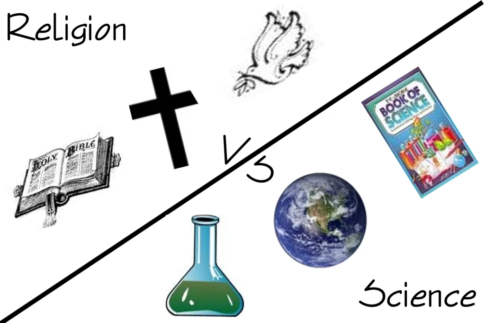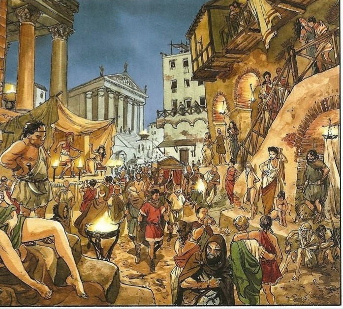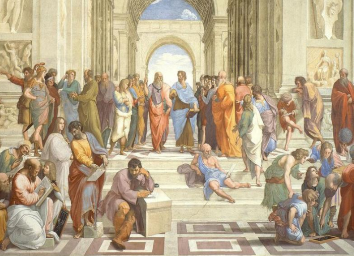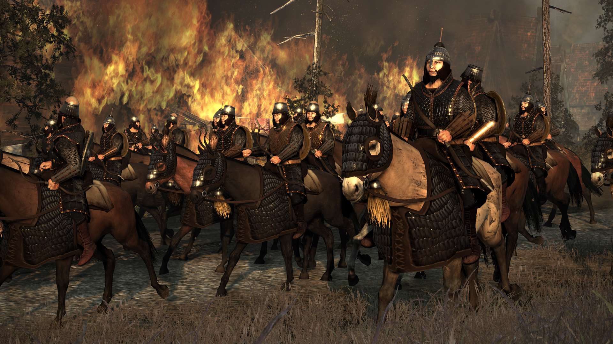modern civilizationmodernmodern sciencecivilization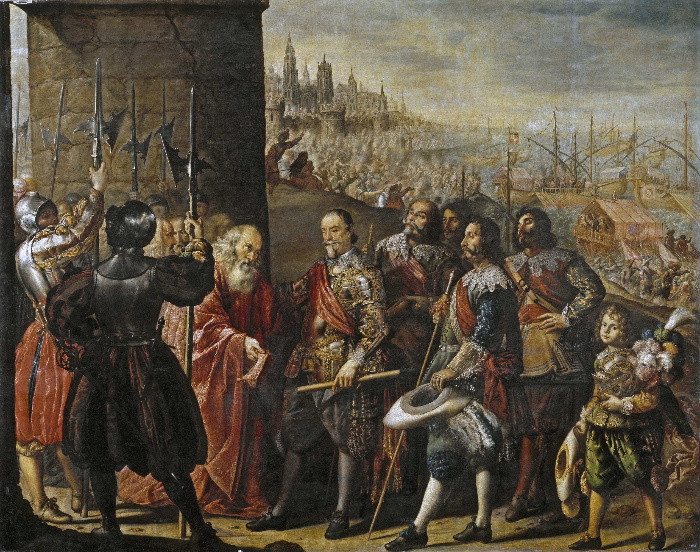Individual JudgmentPractical Catholic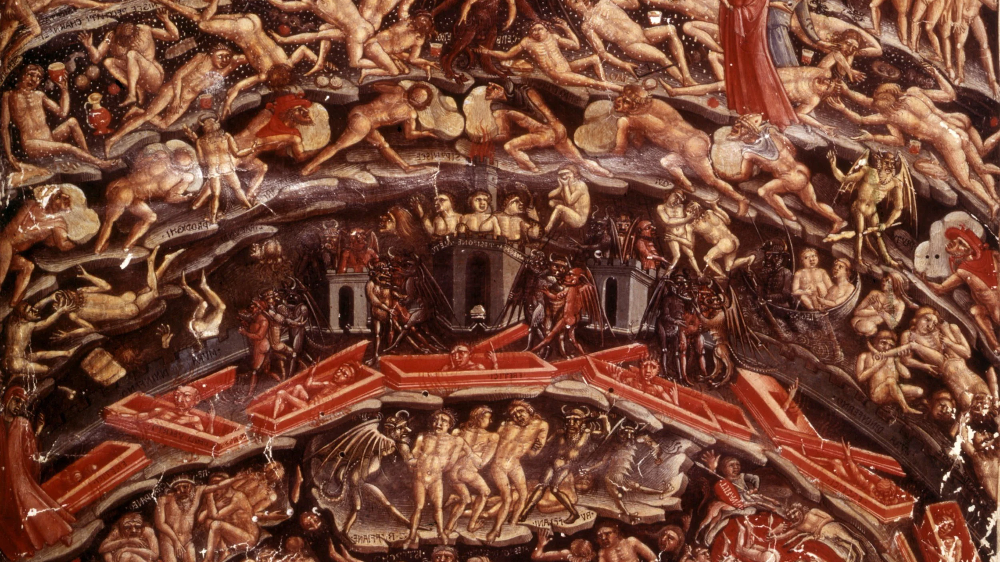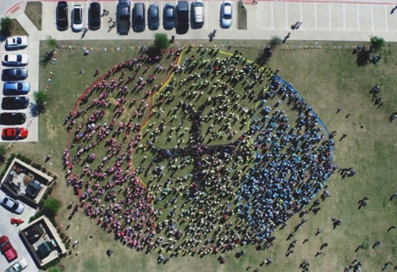church errors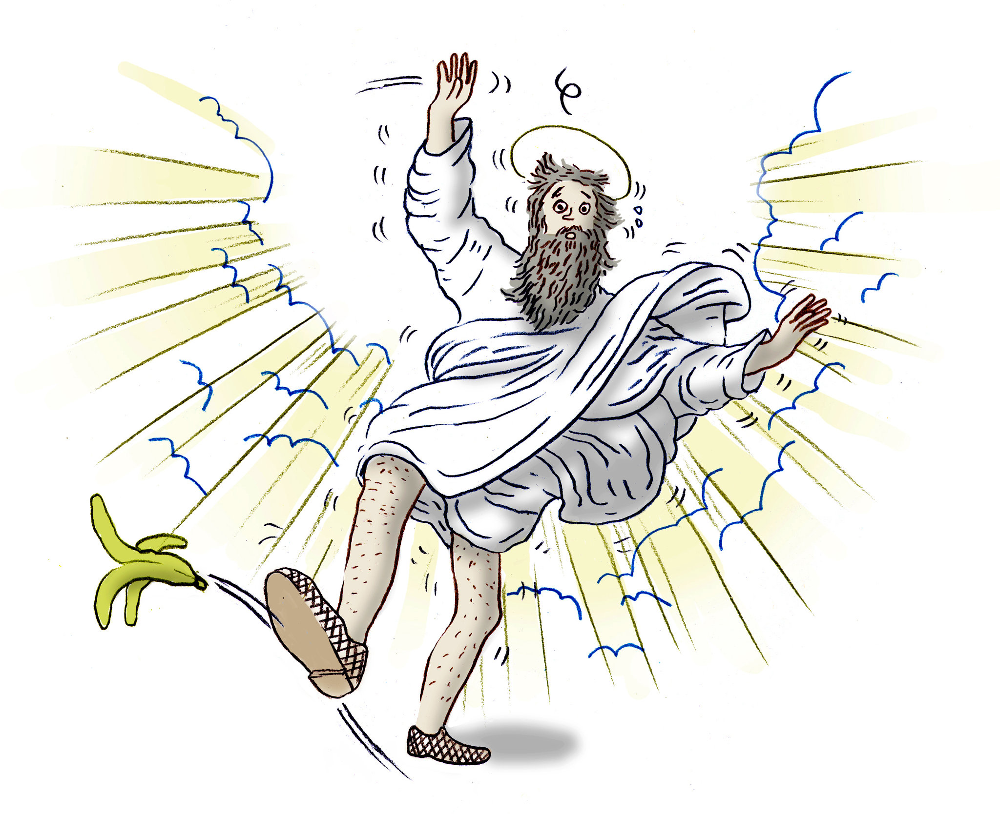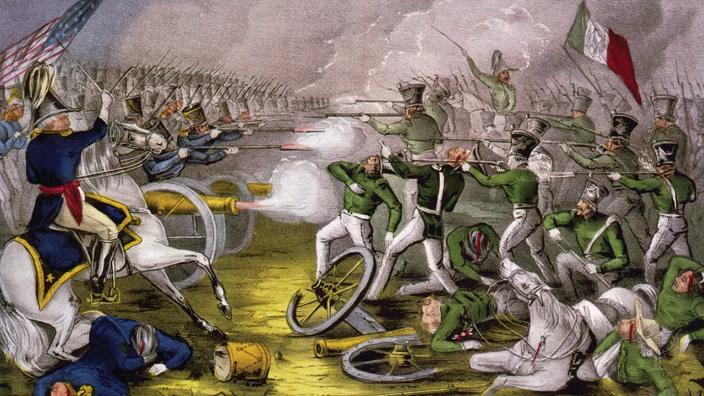Potential Critics Of Father Morley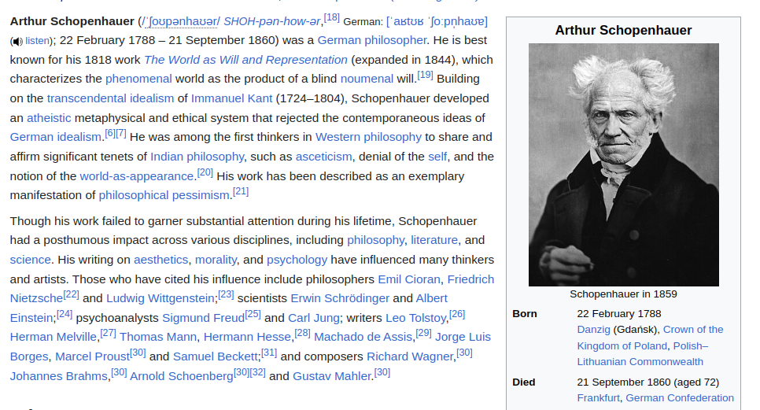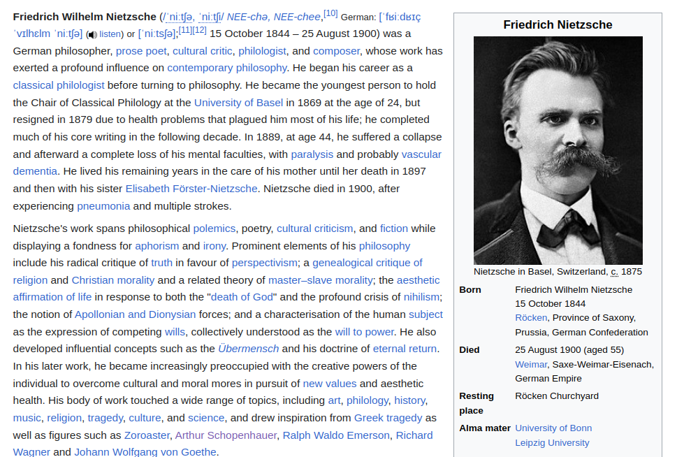Moral Nobility Not LogicCharley MacMahonThe Hope Of The world